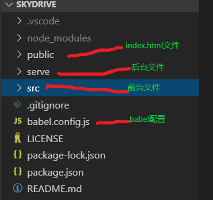
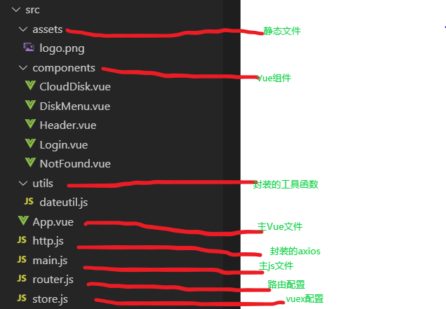
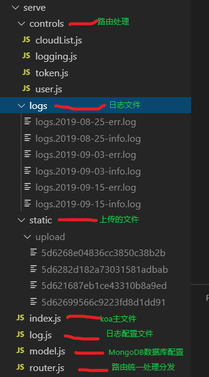

发表于 2019-08-31
好久没有使用 Vue 开发应用，很多知识都忘得差不多了。趁着业余时间搞了一个项目，熟悉相关的技术知识，项目地址。使用了 Vue 全家桶和 Nodejs 等前后端技术开发的一款在线网盘，后续会开发更多功能。
技术栈
- Vue
- Vue-router
- Vuex
- Element UI
- Axios
- Koa
- MongoDB
功能点
- 支持账户登陆注册，采用Token实现身份认证
- 支持上传、下载、移动、修改、删除等操作文件或者文件夹
- 支持访问日志记录和错误日志记录
文章目录
一、整体目录结构
二、数据库设计
三、Router 配置
四、Store
配置
五、封装HTTP请求
六、注册登陆
七、上传文件
八、下载文件
九、日志记录
十、koa 插件配置
一、整体目录结构
1.

2.

3.

二、数据库设计
使用的是 MongoDB
文档型数据库(Mysql属于关系型数据库)。由于本次实现的是一个云盘，主要是目录与子目录的关系，所以整体是一个树状结构。
在设计数据库时，并不是通过维护一个嵌套的对象，而是将所有的数据都放入到一维数组，父子关系通过parId字段来维护，根目录到当前所在目录通过pathRoot字段来维护。只考虑相邻的两级关系，不考虑所有的层级关系，优势如下：
- 存入数据时，只需要将
parId设为当前目录的Id，pathRoot设为根目录到当前目录的路径。而不是通过递归对象将数据放到对应的节点上。 - 修改当前文件或者目录名称时，只需要根据当前数据的Id去数据库匹配然后修改。如果修改的是目录名称(假如nameA修改为nameB)，会影响该目录下所有子目录和子文件的
pathRoot字段，那么只需要匹配所有满足pathRoot字段里面包含nameA的数据，然后替换成nameB就可以了。 - 移动文件或目录时，所有的子目录或者文件也会跟着变化。修改当前文件或目录的
parId字段，指向新的目录Id，同样也要修改所有子目录或者子文件的pathRoot字段，同上。 - 删除文件或目录时，根据当前的Id去数据库匹配删除。如果删除的目录里面有子目录或者文件(假如删除的是目录folderA)，那么只需要匹配所有满足
pathRoot字段里面包含folderA的数据，然后全部删除。最后记得也要删除磁盘文件，不然内存消耗太大(如果有回收站保留30天，则设置最后保留时间，超时后再去删磁盘文件)。
三、Router 配置
路由配置文件，某些需要身份验证的路由使用了Vue Router 导航守卫用法来进行跳转前的判断拦截。
//Router配置Vue.use(VueRouter)const router = new VueRouter({mode: 'history',routes: [{path: '/',component: Login},{path: '/cloud',component: CloudDisk,meta: { //需要身份校验的路由requireAuth: true}},{path: '*',component: NotFound}]})//路由认证--身份校验不通过则跳转到登陆界面router.beforeEach((to, from, next) => {const token = store.state.token;if(to.matched.some( record => record.meta.requireAuth) && !token){next({path: '/',query: {redirect: to.fullPath}})}else{next()}})
四、Store 配置
小项目是没必要使用该技术的 Vuex，只是熟悉其用法才在本次项目开发中使用。
const store = new Vuex.Store({state: { //单一数据源token: window.localStorage.getItem('token'),userName: window.localStorage.getItem('userName'),userId: window.localStorage.getItem('userId')},mutations: { //更改 store 中的状态，通过commit来触发LOGIN: (state, data) => { //登陆state.userName = data.userName;state.userId = data.userId;state.token = data.token;window.localStorage.setItem('token', data.token);window.localStorage.setItem('userName', data.userName);window.localStorage.setItem('userId', data.userId);},LOGOUT: (state) => { //注销state.userName = "";state.userId = "";state.token = "";window.localStorage.removeItem('token');window.localStorage.removeItem('userName');window.localStorage.removeItem('userId');}},actions: { //触发更改状态的行为（如果是异步操作，则需要使用action；如果是同步行为，则可以直接使用mutations，不需要使用action触发commit）UserLogin({ commit }, data){//异步操作...commit('LOGIN', data);},UserLogout({ commit }){//异步操作...commit('LOGOUT');},}});
具体的 **.vue
文件用法this.$store.dispatch('UserLogin', data);this.$store.dispatch('UserLogout', data);
五、封装HTTP请求
使用的是axios，然后结合实际项目需求和接口返回的状态码进行统一封装，比如界面错误提示或者身份认证不通过强制跳转等行为，在外层统一处理，避免在每个实际的HTTP请求后的回调里重复处理。
import axios from 'axios';import store from './store.js';import router from './router.js';import { Message } from 'element-ui';//创建axios实例var instance = axios.create({baseURL: url,timeout: 7000, //超时返回错误headers: { 'Content-Type': 'application/json;charset=UTF-8' },withCredentials: true //跨域配置});//request拦截器instance.interceptors.request.use(config => {config.headers['skyAuth'] = `aut${store.state.token}` //自定义header-tokenconfig.headers['authId'] = `ati${store.state.userId}` //自定义header-authIdreturn config;});//respone拦截器instance.interceptors.response.use(response => {//status==200统一提示(对于不希望提示的某些操作，则判断是否有message)const tip = response.data.message;if(tip){Message({message: response.data.message,type: response.data.status,center: true});}return response.data;},error => { //错误处理if (error.response) {//错误状态码统一提示Message({message: error.response.statusText,type: 'error',center: true});switch (error.response.status) {case 401:store.dispatch('UserLogout'); //重新认证router.replace({ //跳转到登录页面path: '/',query: { redirect: router.currentRoute.fullPath } // 将跳转的路由path作为参数，登录成功后跳转到该路由});}}else{//网络错误统一提示Message({message: error,type: 'error',center: true});}return Promise.reject(error.response);});export default {//封装get请求getService(url) {return instance.get(url);},//封装post请求postService(url, data) {return instance.post(url, data);}}
封装后，具体的场景使用：
import http from "../http.js";//get请求http.getService(path).then(res => {。。。}).catch(err => {})//post请求http.postService(path, params).then(res => {。。。}).catch(err => {})
六、注册登陆
账号密码都有输入校验，注册时会先根据用户名匹配数据库是否有同名账号(使用sha1加密账号密码)，登陆时后台会生成随机Token(使用jsonwebtoken)发送到前台，并放入到
Http header里边作为后续的请求身份校验：
//前台输入校验，web攻击是可以绕过前台的校验，为了保证安全，后台也要进行校验：rules: {name: [{ required: true, message: '请输入账号', trigger: 'change' },{ min: 5, max: 7, message: '长度在 5 到 7 个字符', trigger: 'blur' },{ pattern: /^[(\u4e00-\u9fa5)|(a-zA-Z0-9)]+$/, message: '输入格式有误，只支持中文、英文或数字', trigger: 'change' }],pwd: [{ required: true, message: '请输入密码', trigger: 'change' },{ min: 8, max: 16, message: '长度在 8 到 16 个字符', trigger: 'blur' },{ pattern: /^[(a-zA-Z0-9\.)]+$/, message: '输入格式有误，只支持英文、数字或.', trigger: 'change' }]}
//后台创建tokenconst jwt = require('jsonwebtoken');//token中间件const createToken = user => {const token = jwt.sign({user: user},'skydrivelhc',{expiresIn: '10m'});return token;}//后台校验tokenconst checkToken = async (ctx, next) => {await next();const authToken = ctx.get('skyAuth') || ctx.request.query.skyAuth; //如果是下载文件，get请求的认证信息是放到url参数上面的if (!authToken) {ctx.status = 401;ctx.body = {status: "error",message: "身份认证失败"};return}const token = authToken.slice(3);try {await jwt.verify(token, 'skydrivelhc'); //如果校验不通过，会抛出异常} catch (err) {ctx.status = 401;ctx.body = {status: "error",message: "身份认证失败"};return}}
七、上传文件
前台自定义ajax请求：
//html代码<div title="" class="cloud__upload"><input name="file" value="upload" @change="uploadFile($event)" type="file" /></div>//js代码uploadFile: function (e) { //上传文件const document = e.target;const file = document.files[0];if (file.size > 10 * 1000 * 1000) {messageShow('error', '文件大小不能超过10M');return}let _this = this;//创建formdata对象let formData = new FormData();formData.append('file', file);formData.append('foldId', this.curFoldId);formData.append('pathRoot', this.pathRoot.concat(this.curFoldId));let xhr = new XMLHttpRequest();xhr.open('post', url);xhr.setRequestHeader('skyAuth', `aut${store.state.token}`); //涉及到认证，需要自定义header头部xhr.setRequestHeader('authId', `aut${store.state.userId}`); //自定义header头部xhr.onreadystatechange = function (e) {if (xhr.readyState == 4 && xhr.status == 200) {const response = JSON.parse(xhr.responseText);messageShow(response.status, response.message, _this);_this.$emit('cloud_list_handel', { type: 'uploadOk' });document.value = ""; //需要清除value，否则第二次选择同样文件时无反应}if (xhr.readyState == 4 && xhr.status !== 200) {messageShow('error', '上传失败', _this);document.value = "";}};xhr.upload.onprogress = function (e) { //进度条if (e.lengthComputable) {_this.percent = e.loaded / e.total * 100;}}xhr.upload.onerror = function (err) {messageShow('error', '网络连接失败', _this);document.value = "";}xhr.send(formData);}
后台接收文件，先将本次操作存储到数据库，再将文件放到磁盘，考虑到不同的目录可能会有相同的文件，所以磁盘文件以数据库的唯一id字段命名，而不是上传时的名称，下载文件的时候再根据数据库存储的文件名称替换就行了：
const file = ctx.request.files.file;const creator = ctx.get('authId').slice(3);//校验数据库中是否已存在同名let validRes = await validSameName({parId: ctx.request.body.foldId, name: file.name, type: 'file', creator});if(validRes){ctx.body = validRes;return}const newFile = {name: file.name,type: 'file',size: file.size,updateTime: new Date().getTime(),parId: ctx.request.body.foldId,pathRoot: ctx.request.body.pathRoot.split(","),creator}let doc = await addList(newFile);ctx.status = 200;ctx.body = {status: doc ? "success" : "error",message: doc ? "上传文件成功" : "上传文件失败",data: doc || []}//存入磁盘if(doc){const reader = fs.createReadStream(file.path);const filePath = path.resolve(__dirname, '..') + '/static/upload/';const wirter = fs.createWriteStream(filePath + doc._id);reader.pipe(wirter);}
八、下载文件
前台自定义a标签，注意携带身份认证信息：
let link = document.createElement('a');link.setAttribute("href", `http://localhost:3000/api/downloadfile?fileId=${file._id}&skyAuth=aut${this.$store.state.token}`);link.setAttribute("download", file.name);link.style.visibility = 'hidden';document.body.appendChild(link);link.click();document.body.removeChild(link);
后台下载文件：
let doc = await queryList({_id: ctx.request.query.fileId});if(doc && doc.length > 0){const filePath = path.resolve(__dirname, '..') + '/static/upload/';const reader = fs.createReadStream(filePath + doc[0]._id);ctx.set('Content-disposition',`attachment;filename=${encodeURI(doc[0].name)}`); //涉及到中文需要编码ctx.body = reader // 返回在响应体里return}
九、日志记录
引入了log4js插件来记录日志，目前配置两种类型：访问日志和错误日志。为了避免日志文件过于庞大，按照日期来存储:yyyy-mm-dd-info.log
和 yyyy-mm-dd-err.log。
//日志记录const log4js = require('log4js');log4js.configure({appenders: {info: { type: 'dateFile', filename: './logs/logs' , pattern: 'yyyy-MM-dd-info.log', "alwaysIncludePattern": true},error: { type: 'dateFile', filename: './logs/logs' , pattern: 'yyyy-MM-dd-err.log', "alwaysIncludePattern": true}},categories: {default: { appenders: ['info'], level: 'info' },error : {appenders: ['error'], level: 'error'}}});let logger_Info = log4js.getLogger(); //访问日志let logger_Error = log4js.getLogger('error'); //错误日志module.exports = {logger_Info,logger_Error}
十、koa 插件配置
1.跨域配置，引入koa2-cors。
2.处理Post请求和文件上传，引入koa-body。
3.记录全局错误日志文件。
//跨域配置app.use(cors({origin: 'http://localhost:8080', //*表示接受所有访问credentials: true}));app.use(koaBody({multipart: true, //支持文件上传strict: false, //如果为true，不解析GET,HEAD,DELETE请求formidable: {maxFileSize: 10 * 1024 * 1024 //限制10M大小}}))app.on('error', err => {//捕获全局错误，打印错误日志logger_Error.error(err);})
欢迎转载，转载请注明出处。